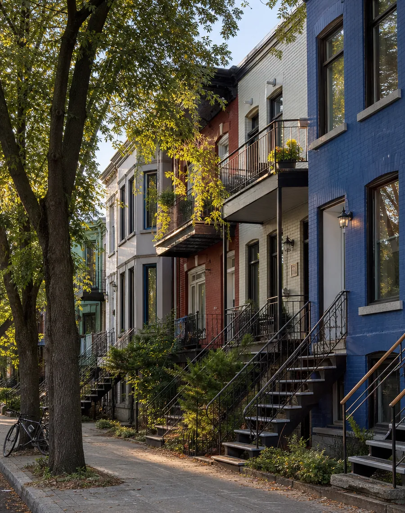

Montréal est la plus grande ville du Québec, construite sur une île du fleuve Saint-Laurent autour du mont Royal. Le français est la langue officielle du Québec, et l'anglais est aussi très parlé en ville. Voici les cinq secteurs où nous travaillons le plus souvent.
Informations indicatives seulement. Les descriptions sont générales, et les fourchettes de prix sont des estimations fictives pour ce site de démonstration. Visitez un secteur à différents moments de la journée, et si possible à différentes saisons, avant de décider.

Le Plateau-Mont-Royal
Un quartier central et animé, connu pour ses maisons en rangée colorées avec escaliers extérieurs, ses cafés, ses boutiques et ses restaurants, et pour sa proximité avec le parc du Mont-Royal. Il est desservi par la ligne orange du métro et compte de nombreuses pistes cyclables.
Idéal pour : les jeunes professionnels, les familles qui aiment la vie urbaine, les investisseurs en plex.
Types de propriétés : duplex et triplex, appartements dans des plex, quelques condos.
Prix indicatifs (fictifs) : 4½ à partir de 1 900 $ par mois ; triplex à partir de 1 200 000 $.
À vérifier : les vignettes de stationnement sur rue, l'isolation et les fenêtres des bâtiments anciens.
Un ancien secteur industriel voisin du centre-ville et du canal de Lachine, transformé au cours des quinze dernières années avec de nombreux immeubles de condos neufs, des restaurants et des commerces. La piste du canal est très fréquentée par les marcheurs et les cyclistes.
Idéal pour : les professionnels qui travaillent au centre-ville, les nouveaux arrivants, les acheteurs de condos neufs.
Types de propriétés : condos récents, appartements meublés, quelques lofts.
Prix indicatifs (fictifs) : condos 1 chambre à partir de 450 000 $ ; 4½ meublés à partir de 2 400 $ par mois.
À vérifier : les charges de copropriété, le fonds de prévoyance et les chantiers à proximité.
Un arrondissement résidentiel au bord du fleuve Saint-Laurent, avec un long parc riverain, une plage urbaine et la rue Wellington, une artère commerçante animée avec boutiques et restaurants. Il est desservi par la ligne verte du métro.
Idéal pour : les familles, les premiers acheteurs, les personnes qui aiment être près de l'eau.
Types de propriétés : maisons de ville, duplex, appartements, quelques condos neufs.
Prix indicatifs (fictifs) : maisons de ville à partir de 700 000 $ ; 4½ à partir de 1 700 $ par mois.
À vérifier : si la propriété est en zone inondable, et l'état du sous-sol.
Un grand quartier résidentiel dans l'ouest de la ville, avec des rues arborées, des parcs et des commerces de proximité. Il a une longue histoire bilingue, avec des communautés francophone et anglophone, et il est apprécié des familles. Il est desservi par la ligne orange du métro.
Idéal pour : les familles, les étudiants, les nouveaux arrivants anglophones.
Types de propriétés : cottages jumelés, duplex, appartements dans de petits immeubles.
Prix indicatifs (fictifs) : cottages à partir de 1 000 000 $ ; 3½ à partir de 1 400 $ par mois.
À vérifier : la distance du métro, car certaines rues ne sont desservies que par autobus.
Le cœur historique de la ville, à côté du Vieux-Port, avec ses rues pavées et ses bâtiments de pierre des 18e et 19e siècles. Beaucoup de ces bâtiments abritent aujourd'hui des condos, des bureaux, des hôtels et des restaurants. Le quartier est très fréquenté par les visiteurs en été.
Idéal pour : les acheteurs de condos de caractère, les entreprises qui cherchent des bureaux prestigieux.
Types de propriétés : condos dans des bâtiments reconvertis, lofts, bureaux.
Prix indicatifs (fictifs) : condos à partir de 500 000 $ ; bureaux à partir de 27 $ le pied carré par année.
À vérifier : le bruit des événements et des terrasses en été, et le coût du stationnement.